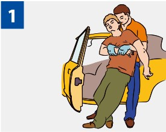
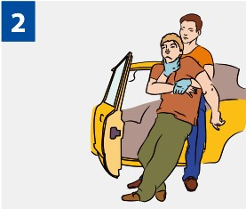

ИЗВЛЕЧЕНИЕ ПОСТРАДАВШЕГО ИЗ АВТОМОБИЛЯ ИЛИ ТРУДНОДОСТУПНОГО МЕСТА
Прежде всего, убедитесь в собственной безопасности!
Когда НУЖНО извлекать пострадавшего:
Стойкий запах бензина в автомобиле.
Задымление транспортного средства или признаки его возгорания.
Характер травм и тяжесть состояния пострадавшего не позволяет оказывать помощь в салоне автомобиля.
Погодные условия не позволяют оставлять пострадавшего в автомобиле (холод, нет возможности согревания).

|
Извлечение без фиксации шеи рукой |

|
Извлечение с фиксацией шеи рукой |
Источник:
http://www.culture.mchs.gov.ru/medical/algorithms_of_first_aid_in_acute_and_urgent_conditions/first_aid_in_lesions_of_the_vision/
ТЕЛЕФОН СЛУЖБЫ СПАСЕНИЯ: 112